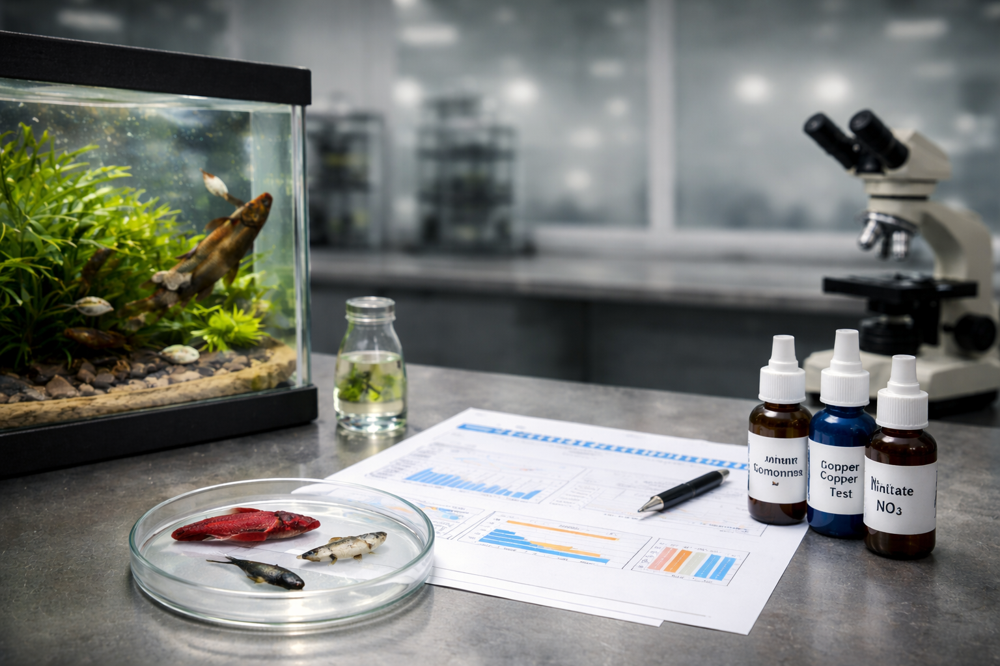

Veterinárny a potravinový ústav v Bratislave
VPÚ v Bratislave vykonáva senzorické, mikrobiologické, hydrobiologické, chemické a molekulárno-biologické skúšky v potravinách, krmivách, vode a materiáloch prichádzajúcich do styku s potravinami. Poskytuje laboratórnu diagnostiku chorôb zvierat a certifikáciu osôb.
Naše služby
🚐 Zvozné linky
Prevádzkujeme zvozné linky z odberných miest podľa platného harmonogramu.
→ Zobraziť harmonogram🏅 Akreditácia ISO 17025
Vydávame akreditované protokoly pre všetky vykonávané skúšky.
→ Certifikát akreditácieAktuality z VPÚ v Bratislave

Nová služba: Rozbory akváriovej vody – VPÚ v Bratislave
Viete, čo skutočne zabíja vaše ryby? Spúšťame laboratórne rozbory akváriovej vody. VPÚ v Bratislave rozširuje svoju ponuku o špecializované analytické balíčky pre akvaristov..
Prečítať celý článok →
Antimikrobiálna aktivita medu
Slovensko je prvá krajina EÚ, ktorá ponúka akreditovanú metódu stanovenia antibakteriálnej aktivity medu.
Prečítať celý článok →
Informácie o giardióze
V posledných týždňoch sa v médiách objavili informácie o zvýšenom výskyte giardiózy.
Prečítať celý článok →
Zvozné linky - zmena harmonogramu
Od pondelka 16.2.2026 sa mení harmonogram zvoznej linky VPÚ v Bratislave.
Prejsť na aktuálny harmonogram →
Senzorické skúšky
Možnosť absolvovať senzorické skúšky v termíne 17.3. - 27.3.2026.
Prečítať celý článok →